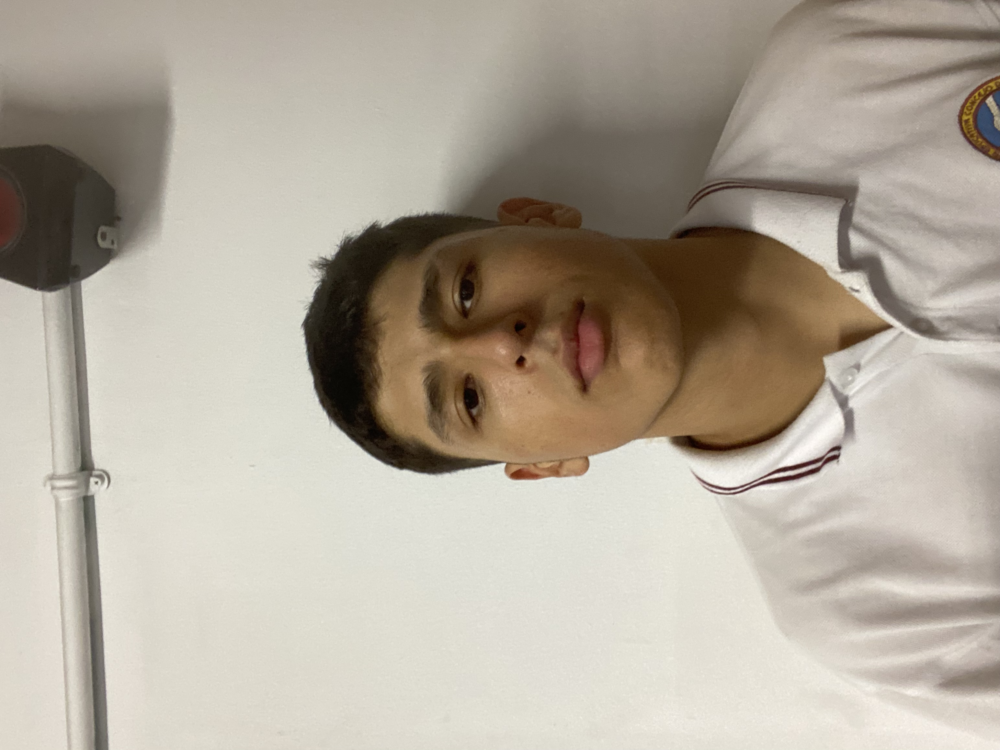
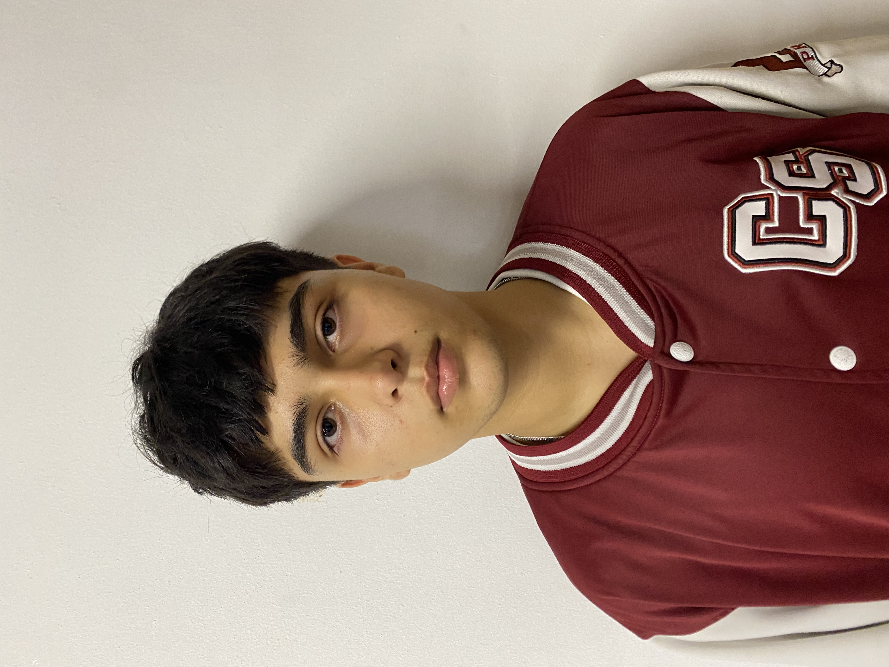
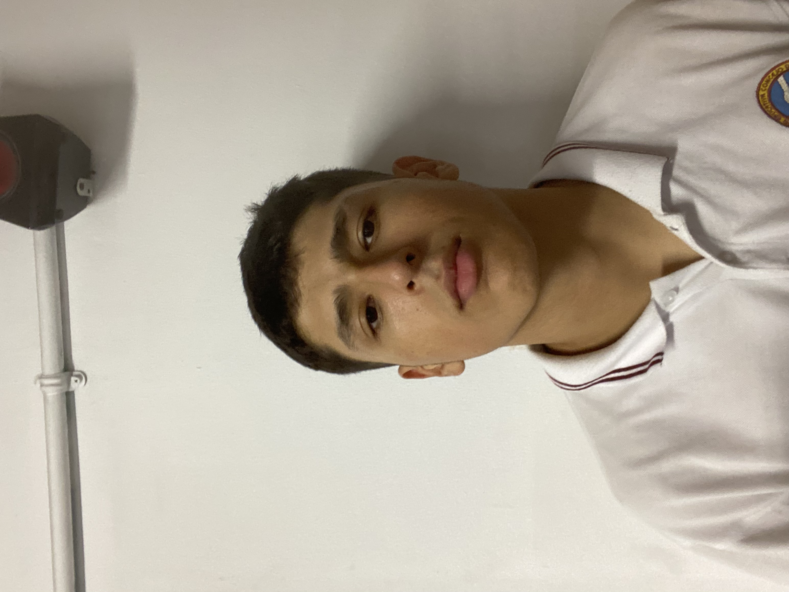
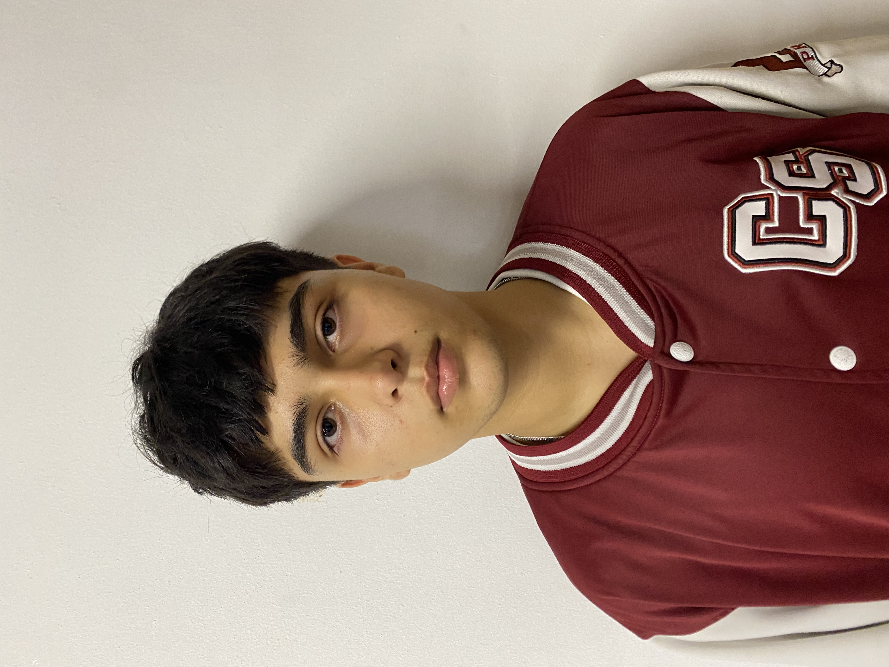

Carlos Ruiz - 16 años
David Herrera - 17 años

Juan Diego Perez - 17 años
Samuel Prisco - 16 años

Sebastian Zúñiga - 17 años
Carlos Ruiz - 16 años
David Herrera - 17 años
Juan Diego Perez - 17 años
Samuel Prisco - 16 años
Sebastian Zúñiga - 17 años
FrenTosh es una empresa fundada por cinco emprendedores apasionados por la gastronomía y la innovación:
Samuel Prisco, Carlos Ruiz, David Herrera, Juan Diego Pérez y Sebastián Zúñiga. Estos jóvenes
estudiantes son originarios de la Institución Educativa Concejo de Sabaneta J.M.C.B, donde compartieron
su visión de crear un negocio que ofrezca una experiencia única en tostadas francesas.
Nuestra empresa, FrenTosh, se especializa en la preparación y venta de tostadas francesas excepcionales.
Nuestro enfoque se centra en la calidad de los ingredientes y la creatividad en la presentación. Cada
tostada francesa es una obra maestra culinaria que combina sabores exquisitos con una presentación
visualmente atractiva.
Lo que nos diferencia en FrenTosh es la atención meticulosa a los detalles y la pasión por la
gastronomía. Utilizamos ingredientes frescos y de alta calidad para crear tostadas francesas únicas que
deleitarán tus papilas gustativas. Nuestro menú incluye una variedad de opciones, desde las clásicas
tostadas francesas con jarabe de arce hasta creaciones más audaces con ingredientes sorprendentes.
Además de ofrecer tostadas francesas deliciosas, en FrenTosh valoramos la sostenibilidad y la comunidad.
Nos esforzamos por mantener prácticas ecoamigables en nuestra operación y apoyamos a la comunidad local
siempre que podemos.
En resumen, FrenTosh es más que una empresa de tostadas francesas; es una expresión de pasión,
creatividad y compromiso con la calidad. Nuestro objetivo es brindar una experiencia culinaria única y
deliciosa a nuestros clientes mientras contribuimos positivamente a nuestra comunidad. ¡Esperamos que
disfrutes de nuestras tostadas francesas y te unas a nosotros en este apasionante viaje gastronómico!